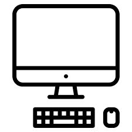

월드 와이드 웹(World Wide Web, WWW, W3)은 인터넷에 연결된 컴퓨터를 통해 사람들이 정보를 공유할 수 있는 전 세계적인 정보 공간을 말한다.
간단히 웹(Web)이라 부르는 경우가 많다. 이 용어는 인터넷과 동의어로 쓰이는 경우가 많으나 엄격히 말해 서로 다른 개념이다.
웹은 전자 메일과 같이 인터넷 상에서 동작하는 하나의 서비스일 뿐이다.
그러나 1993년 이래로 웹은 인터넷 구조의 절대적 위치를 차지하고 있다.
인터넷에서 HTTP 프로토콜, 하이퍼텍스트, HTML형식 등을 사용하여 그림과 문자를 교환하는 전송방식을 말하기도 한다.
자바 개발자가 되기 위해서 공부하는 HTML 과 CSS 그리고 JAVASCRIPT.
HTML 수업을 들으면서 태그에 대해서 배워보자 줄바꿈과 단락을 표현하는 태그를 배운다.
